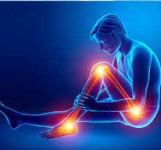
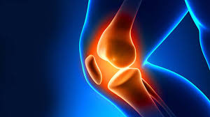

Ortho
Orthopedics is a medical specialty that focuses on the diagnosis, correction, prevention, and treatment of patients with skeletal deformities - disorders of the bones, joints, muscles, ligaments, tendons, nerves and skin. These elements make up the musculoskeletal system.
Your body's musculoskeletal system is a complex system of bones, joints, ligaments, tendons, muscles and nerves and allows you to move, work and be active. Once devoted to the care of children with spine and limb deformities, orthopedics now cares for patients of all ages, from newborns with clubfeet, to young athletes requiring arthroscopic surgery, to older people with arthritis.
The physicians who specialize in this area are called orthopedic surgeons or orthopedists.


© 2019 We Hospital. All rights are reserved